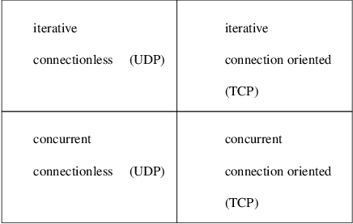

Index
1. Taxonomy of client/server architectures
- so far we have looked at a simple
TCP server/client and a simple UDP server/client
- this
week we will further classify these servers
- first we
will examine the pros and cons of the TCP and UDP
server/clients
2. The pros/cons for a TCP client server
- pro connection is reliable
- pro
reasonably efficient for sending medium/large amounts of
data
- con requires packets to be sent (overhead) to
setup the connection and close the connection
- con
inefficient to send tiny amounts of data
3. The pros/cons for a UDP client server
- pro simpler than the TCP counterpart
- pro very efficient for sending tiny amounts of data
- pro no connection is created by UDP, hence less
overhead
- con it uses the UDP transport thus data might
be scrambled or lost in transit
-
connectionless transport characteristics
- con you
have to manage the unreliable nature of the connection
yourself
4. Returning to the basic server algorithm for TCP or UDP
5. Problems with the simple server?
- unfortunately this is only good
enough for simple applications
- consider a service
requiring considerable time to handle each request
- example suppose a file transfer client
server were implemented like this!
- one user requests a
huge file
- moments later another user might wish to
transfer a small file
- the second user has to wait
a considerable time just to transfer a small file
- the
second user is blocked until the first user has
finished with the server
- thus servers are seldom built
like this
6. Taxonomy of client/server architecture
- first on the list in our taxonomy of
client servers is
- iterative server (as we have
just seen)
- used to describe a server
implementation that processes one request at a time
- second on the list in our taxonomy of client servers is
a
- concurrent server
- used
to describe a server that handles multiple requests at a
time
- best viewed from the client perspective
- the server appears to communicate with
multiple clients concurrently.
- the term
concurrent server refers to whether the server handles
multiple requests concurrently, not to whether the
underlying implementation uses multiple concurrent
processes
7. Concurrent server pro/cons
- concurrent servers are more
difficult to design and build
- the
resulting code is more complex
- difficult to modify
- most programmers choose concurrent server
implementations
8. Iterative server pro/cons
- cause unnecessary delays in
distributed applications
- may be a performance
bottleneck that effects many client applications
-
iterative server implementations, which are easier to
build and understand, may result in poor performance because
they make clients wait for service. Whereas in contrast,
concurrent server implementations, which are more difficult
to build, yield better performance.
- we can view
these two categories across the TCP/UDP division below:

9. Pseudo code for the iterative connectionless server
10. Pseudo code for the concurrent connectionless server
create a socket and bind
to the well known address
for the service being offered
leave the socket unconnected
loop
call recvfrom to obtain the
next client request
if (fork() == 0) {
/* child process. */
process the request
form a reply and send
it to client
(use sendto)
exit (0)
}
/* only the parent gets here. */
end
11. Pseudo code for a concurrent connection oriented server
create a socket and bind
it to the well known address
for the service being offered
place socket into passive mode
making it ready for use by
the server
loop
call accept to receive the
next request from a client
if (fork() == 0) {
/* must be the child */
repeat
read request from client
process the request
form a reply and send
it to client
until client wishes to quit
close connection
exit (0)
}
/* only the parent gets here. */
end
12. When to use each server type
- iterative vs
concurrent
- iterative server is easier
to design, implement and maintain
- concurrent server can
provide a quicker response to requests
- use
iterative implementation if
process the request
is small connection
oriented vs connectionless - connection
oriented access means using TCP
-
implies reliable delivery
- because connectionless
transport means using UDP
- it implies
unreliable delivery
13. Conclusion
- only use
connectionless transport if the application protocol handles
reliability
- or the local area network
exhibits:
- low packet loss
- no
packet reordering (very few do)
- use
connection oriented transport whenever
-
a wide area network separates client and server
-
never move a connectionless client and server to a wide area
network
- without checking to see if the
application protocol handles the reliability
problems
Index
1. Taxonomy of client/server architectures
2. The pros/cons for a TCP client server
3. The pros/cons for a UDP client server
4. Returning to the basic server algorithm for TCP or UDP
5. Problems with the simple server?
6. Taxonomy of client/server architecture
7. Concurrent server pro/cons
8. Iterative server pro/cons
9. Pseudo code for the iterative connectionless server
10. Pseudo code for the concurrent connectionless server
11. Pseudo code for a concurrent connection oriented server
12. When to use each server type
13. Conclusion
Index
This document was
produced using
groff-1.22.